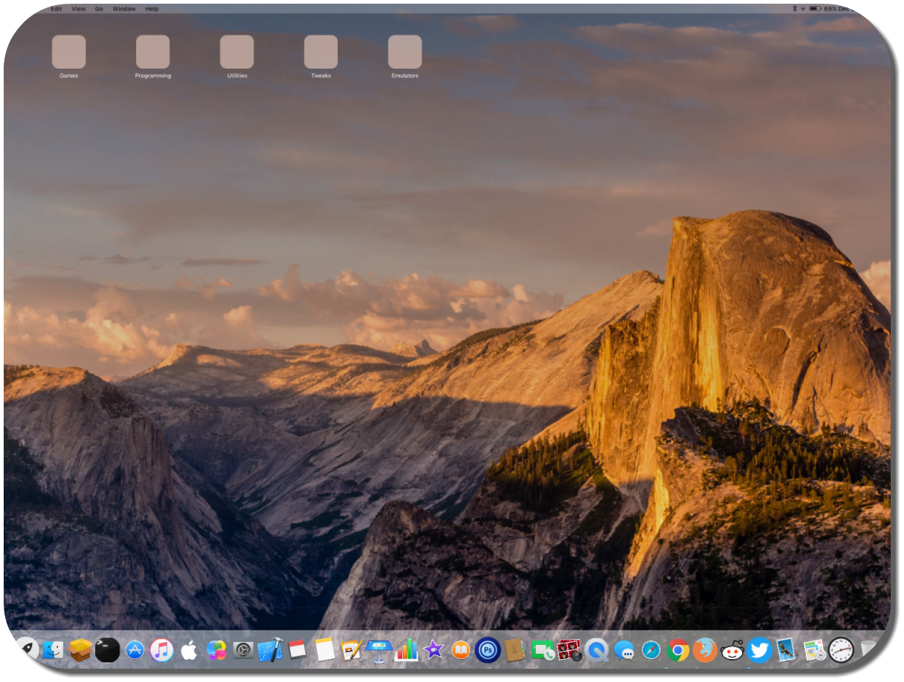

I beta tested iOS 10! You can view my comments on it here!
I program iOS and android apps, and make themes on Cydia, the jailbroken App Store made by Saurik(Jay freeman).
Right now I'm working on setting up a repo for my jailbreak projects. Thanks to AntiqueDev, there's a template (mirror) which makes this very easy. I will likely not finalize it until I have a few packages finished.
One of my packages is called "MacPad OS 8.X", available at the ModMyi repo or from direct download here. Being a theme, there's really no source code to publish. Updates for this package are no longer provided.

Several others are planned and in development, such as a replacement for Untethered Hey Siri for iOS 10, and several themes for tweaks like LockHTML